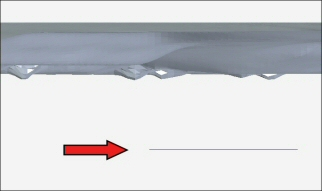
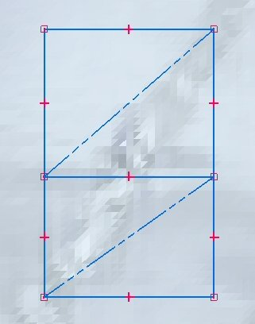

Create the assembly and sketch defining the boundaries of the terrain model
The Virtual Component Structure Editor is used to created the solid representation of the terrain model. A sketch is needed to define the placement of the virtual components.
-
Create a new assembly document with the appropriate length units.
Tip:The length readout values are set on the Units page (File Properties dialog box). You can create templates that contain these units.
-
From the Parts Library, drag the part file containing the triangles representing the terrain into the assembly.
-
Fit the view.
Tip:Turn off the display of the reference planes and coordinate systems before fitting the view.
-
Create a sketch on a plane parallel to the top view.
Note:The elevation of the sketch plane is the elevation of the bottom face of the solid body representing the terrain after the virtual components are published. A front view is shown below with an arrow pointing to a side view of the sketch.

-
In the sketch, use the Line command to create the boundaries defining the sides of the solid body.

Note:-
If the sketch elements defining the boundary cannot be contained within a 700 meter circle, an error is displayed. The sketch below shows two adjacent boundaries which, when combined, would exceed the limit.
-
A virtual component cannot share a line on a common edge. In this sketch, there are two lines superimposed on the common edge, and each component will contain a unique line.
-
The purpose of the diagonal construction lines is to help determine if the range of the sketch elements are within limits. If the length of the diagonal exceeds 700 meters, the virtual component cannot be created.
-